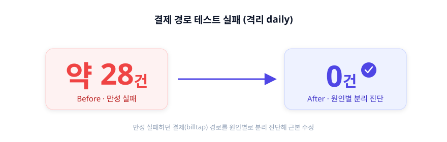

김진완 포트폴리오 | Frontend Engineer
About

2023년 9월부터 이마고웍스에서 AI 기반 치과 CAD/CAM SaaS인 Dentbird의 프론트엔드를 맡아, 웹에서 만든 데이터를 사용자 PC의 외부 소프트웨어로 넘기는 Electron 연동 앱을 단독 설계·운영해 왔습니다. 브라우저 보안 정책에 막힌 연동을 재설계하고, 좌표·전달 방식이 제각각인 외부 장비 12종을 단일 인터페이스로 통합한 것이 중심입니다. 동시에 구독·결제, 모노레포·MFE, 품질 자동화까지 제품과 그 토대를 폭넓게 다뤄 왔습니다. 아래는 그 작업들의 배경·판단·회고입니다.
Skills
 React
React
 TypeScript
TypeScript
 Next.js
Next.js
 TanStack
Query
TanStack
Query  Three.js
Three.js
 Electron
Electron
 Playwright
Playwright
 Jest
Jest
 Docker
Docker
 AWS
AWS
 GitHub
Actions
GitHub
Actions  Datadog
Datadog
웹·로컬 CAM 연동 Electron 데스크톱 앱 — Dentbird Linker
2024.07 ~ 2025.12, 이후 단독 운영 ·
Electron · React · TypeScript · Datadog
성과 — 좌표계·전달 방식이 제각각인 외부 CAM 12종을 단일 연동 인터페이스로 통합, 제각각이던 설치 감지 타임아웃을 3초로 맞추고 비차단 안내로 통일

문제
Dentbird에서 디자인한 보철 케이스를 사용자 PC의 외부 CAM 소프트웨어로 보내는 사내 연동 앱(Linker)을 단독 설계·운영했습니다. 연동은 파일을 전달하는 데이터 채널과 앱 설치·실행 여부를 아는 감지 채널의 두 축으로 나뉘는데, 이 케이스는 그 둘을 모두 다룹니다. 기존에는 케이스를 외부 CAM으로 보내려면 다운로드 → 압축 해제 → 수동 투입을 거쳐야 했고, 자체 로컬 서버가 없는 CAM은 연동 자체가 불가능했습니다. 게다가 Chrome의 LNA(Local Network Access) 정책이 웹→로컬 통신을 차단하면서, 권한 팝업을 놓친 사용자의 CS 문의가 늘었습니다. “지금 되는 방법”을 고르면 정책이 강화될 때 또 막히는 구조였습니다.
해결 — 대안 비교 후 장기 안정성 기준 선택
여러 통신 방식을 구현 속도가 아니라 장기 안정성 기준으로 비교했습니다.
| 방안 | 검토 결과 |
|---|---|
| WebSocket 로컬 서버 | 구현은 가장 빠르나 곧 LNA 적용 대상 → 1~2년 후 재차단될 단기 해법, 탈락 |
| HTTPS 로컬 서버 | 인증서·배포 부담 + 같은 LNA 사정 → 탈락 |
| Custom Protocol | HTTP 요청이 아니라 LNA 적용 대상이 아님 → 채택 |
Custom Protocol을 중간 레이어로 두어, 브라우저가 프로토콜로 Linker를 실행하며 세션 정보를 넘기면 Linker가 서버에서 파일을 직접 받아 변환 후 CAM을 실행하도록 재설계했습니다. 좌표계·전달 방식이 제각각인 외부 CAM 12종(프로세스 실행 방식 8종 + 포트 연동 방식 4종)의 차이는 하나의 변환·연동 인터페이스로 추상화했습니다.

운영 중 발생하던 정체불명의 ‘unknown error’ 모달도 추측으로 고치지 않았습니다. Datadog 로그 시퀀스로 초기 가설(요청 페이로드 문제)을 반증하고, 실제 원인이 변환 대상에 잘못 섞여 들어간 point cloud 파일임을 로그로 확정해 좁혔습니다.
명세가 없던 외부 export는 기존 동작 자체를 명세로
삼았습니다 — CAM으로 보내는 시점의 STL byte
snapshot(크기·sha256)을 그 자리에서 기록해 특성화(characterization)
테스트로 고정한 뒤, 구현을 그 테스트에 통과시키는 방식으로 안전하게
재구현했습니다. processExportSession이 전송 직후 임시 STL을
지우기 때문에, 단언 시점이 아니라 mock 구현 안에서 즉시 읽어 둡니다.
CAM 12종을 모두 설치하지 않고도 연동·자동 업데이트를 검증하려고, 케이스 상단의 Mock Server를 만들었습니다. CAM의 헬스체크·파일 핑 같은 엔드포인트와 자동 업데이트 응답을 흉내 내고, 성공·에러(500)·지연·타임아웃·부분 실패 시나리오를 버튼으로 전환해 Linker가 각 상황에서 어떻게 동작하는지 재현했습니다.
설치 감지 — 감지를 믿지 않는 방향으로
두 번째 축인 감지 채널입니다. 브라우저는 LNA 정책 때문에 로컬 헬스체크로 앱 실행을 직접 확인할 수 없어, 창 포커스 변화 같은 휴리스틱으로 추정할 수밖에 없습니다. 그래서 두 방향의 오탐이 있었습니다.
- false-negative — 앱이 이미 실행 중이면 OS가 기존 창으로 라우팅해 포커스 변화가 안 생겨 ’미설치’로 오인 → 설치돼 있는데 설치 모달이 뜸
- false-positive — 로딩 중 사용자가 DevTools를 열어 포커스가 빠지면 ’설치됨’으로 오인 → 미설치인데 다운로드 안내가 억제됨
감지를 완벽하게 만들려 하지 않고, 틀려도 사용자가 막히지 않는 쪽으로 정책을 통일했습니다. batch 2.5초·Linker 10초로 제각각이던 감지 타임아웃을 3초로 맞추고, 3초 내 미감지면 미설치로 간주하되 설치 안내를 항상 비차단(non-trapping)으로 표시해 어떤 경우에도 다음 행동(다운로드)이 가능하게 했습니다. DevTools로 인한 false-positive는 타임아웃으로 막지 못하는 한계임을 인지한 채 수용했습니다.

이건 1단계입니다. 근본 해법으로는 — Zoom·Slack 같은 설치형 서비스처럼 — 감지 판정 자체를 없애고 다운로드 안내를 항상 제공하되 설치돼 있으면 자동 실행되는 방식을 직접 제안해 기획·QA와 합의했고, 아직 착수 전입니다. 휴리스틱 위에 보강을 더하는 방식으로는 구조적 한계를 넘지 못한다는 것을, 같은 자리가 다시 열리며(reopen) 배웠습니다.
회고
처음엔 로컬 서버 방식이 핵심이었지만 정책 변화로 더는 쓸 수 없게 됐고, 직접 폐기한 뒤 Custom Protocol 기반으로 옮겼습니다. “당장 되는 방법”이 아니라 “정책이 또 바뀌어도 흔들리지 않는 방법”을 고른 판단이 이 프로젝트의 핵심이었습니다.
감지에서도 같은 태도를 얻었습니다. 브라우저 정책상 앱 실행 여부를 정확히 알 수 없어 휴리스틱은 늘 틀릴 수 있는데, 감지를 완벽하게 만들려 애쓰기보다 틀려도 사용자가 막히지 않도록 설계하는 쪽이 더 단단했습니다. 나아가 감지 판정 자체를 없애는 방향까지 제안하게 된 것은, 휴리스틱 위에 보강을 더하는 방식으로는 구조적 한계를 넘지 못한다는 것을 같은 문제가 다시 열리며 겪었기 때문입니다.
(Linker·Batch를 아우르는 LNA 대응 흐름은 팀과 함께였고, 본인 기여는 Linker 앱의 설계·구현·운영과 감지 정책 통일, 그리고 2단계 방향 제안입니다.)
Medit 소프트웨어 연동 인앱 현대화 — 방치된 통합을 되살리고 결합을 끊다
2026.07 · Electron · TypeScript · MUI
성과 — 곧 사용이 끊길 뻔한 협력사 인앱을 엔진·로그인·의존 정리로 되살리고, 우리 서비스가 바뀌어도 재빌드가 필요 없는 구조로 전환 (실제 Electron+CDP 검증 완료, 배포 대기)
문제
협력사 Medit의 소프트웨어 안에서 Dentbird를 쓸 수 있도록 간단한 Electron 인앱 형태로 제공했지만, 2023년 이후 유지보수되지 않았습니다. 그사이 우리 서비스는 이 인앱을 고려하지 않고 업데이트를 거듭했고, 로그인 후 재진입 시 엉뚱한 페이지로 이동하거나 미로그인 상태에서 작업이 저장되지 않는 식으로 호환성이 어긋나기 시작했습니다. 특히 곧 배포될 버전에서는 인앱에서 우리 서비스를 아예 사용하지 못할 수 있는 상황이었습니다.
해결
처음에는 인앱을 최대한 건드리지 않고 고치려 했습니다. 하지만 최신 3D 엔진이 요구하는 WASM 기능(JSPI)이 구버전 Electron에서 동작하지 않아, Electron 25를 31로 올려 다시 빌드해야 했습니다.
로그인 문제의 원인은 인앱이 우리 서비스의 내부 방식에 불필요하게
결합돼 있던 데 있었습니다. 과거 인앱은 유저 정보
API(get-user)의 응답이 200이면 로그인 성공으로 판단했는데,
우리가 이 API를 레거시로 제거하자 그 판단이 통째로 무너졌습니다. 급한
대로 해당 경로에 get-user라는 이름의 이미지를 항상 내려주는
임시 대응을 한 뒤, 애초에 확인할 필요도 없던 이 결합을 IPC 기반 흐름으로
다시 설계해 근본적으로 제거했습니다.
회고
인앱은 C++ 애드인과 함께 빌드되는 구조라 재빌드 자체가 부담이었습니다. 그래서 되살리면서 회사 UI 라이브러리 의존까지 MUI로 대체했습니다(그 라이브러리는 패키지가 GitHub으로 이전되며 설치 경로도 사라진 상태였습니다). 우리 쪽 구현과의 결합을 줄여, 이제는 우리 서비스의 구현 아키텍처가 바뀌지 않는 한 인앱을 다시 빌드할 일이 없습니다.
검증은 브라우저 stub이 불안정해, 실제 Electron에 CDP로 붙어 3D 엔진 구동까지 확인하는 방식으로 바꿨습니다. 두 문제는 해결됐고, 릴리스는 협력사 Medit이 맡아 배포를 기다리고 있습니다. 결합을 완전히 없애는 데 집착하기보다, 큰 변경이 있을 때만 드물게 재빌드하면 되는 선까지 끊는 것을 택했습니다.
B2B 구독·결제 프론트엔드 — 예측 가능/불가능 에러 분리
2023.09 ~ 2025.07 ·
React · TypeScript · TanStack Query
성과 — 모든 에러를 한 덩어리로 처리하던 구조를 예측 가능/불가능 에러로 분리해, 한 기능의 실패가 전체 페이지를 중단시키지 않도록 개선(BusinessLogicError·ErrorBoundary 체계는 모노레포 이관 후에도 존속)
문제 — 모든 에러가 한 덩어리였다
일회성 크레딧에서 반복 구독으로 전환하는 시점에 구독·결제 화면(플랜 업그레이드·좌석 구매·취소·재개·쿠폰·결제수단·히스토리)을 전담했습니다 — 결제 인프라와 팝업 앱 기반은 팀과 함께였습니다. 그런데 당시 회사에는 에러 처리에 대한 정의가 없었습니다. 사실 지금도 그렇습니다. 모든 에러를 하나의 unknown으로 일괄 처리하다 보니, 한 기능에서 발생한 에러가 전체 페이지를 에러 화면으로 바꿨습니다. 케이스 리스트 조회 한 번 실패하면 SNB도 대시보드도 접근하지 못했습니다.
근본 원인은 예측 가능한 에러와 예측 불가능한 에러를 구분하지 않은 것이었습니다. 구분이 없으니, 서버가 의도적으로 내려준 비즈니스 에러든 정말 예상하지 못한 시스템 실패든 똑같이 폴백 UI로 처리돼버렸습니다.
해결 — 에러를 둘로 나누다
예측 불가능한 에러는 ErrorBoundary로 격리했습니다. 컴포넌트마다
분산된 명령형 방어 코드 if (!data) return null을
ErrorBoundary로 대체하고, 어디까지 실패를 허용할지를 도메인 의존 관계로
구분했습니다. billing 정보를 받지 못해도 결제 내역 조회·구독
취소·뒤로가기는 살아남습니다. 한 기능의 실패가 전체 페이지를 중단시키지
않습니다.
예측 가능한 에러는 코드별로 분기했습니다. 서버는 비즈니스 에러를
HTTP 200 · success:false · errorCode 형태로 내려줍니다.
이건 실패가 아니라 의도된 결과라 폴백 UI로 뭉뚱그리면 안 됩니다.
BusinessLogicError 커스텀 클래스로 throw하고,
.when(errorCode, action).otherwise() 체인으로 에러 코드별로
분기했습니다.

회고
에러 처리의 출발점은 정교한 도구가 아니라 에러를 구분 짓는 일이라는 걸 이 프로젝트에서 배웠습니다. 예측 가능한 실패와 불가능한 실패를 나누지 않으면, 아무리 잘 만든 ErrorBoundary를 두어도 결국 다 같은 폴백으로 처리됩니다.
이 구조는 모노레포로 이관된 뒤에도 BusinessLogicError와
withErrorBoundary HOC로 살아남았습니다. 다만 조직 차원의
에러 처리 정의는 여전히 없고, 무엇이 실패해도 무엇은 살아남아야 하는가를
결제 데이터 의존 관계까지 끊어내는 설계는 당시 출시 우선순위와 설계
역량의 한계로 끝까지 가지 못했습니다. 이 문제의식은 이후 관측·복원력
표준화에서 조직 차원으로 이어갔습니다.
또 패턴과 설계는 팀 전체의 공통 이해가 없으면 복잡도만 높인다는 것도 이때 배웠습니다. 에러 응답 형식만 해도 서버가 HTTP 200에 success:false로 내려줄지 4xx·5xx로 내려줄지부터 백엔드와 합의가 필요했고, 이 약속을 미리 맞춰두지 않으면 응답마다 어떻게 처리할지 다시 논의하는 비용이 계속 쌓였습니다.
공통 모듈 Micro Frontend — 제약 기반 통합 전략
2023.09 ~ 2025.10 ·
NX · Module Federation
성과 — 4개 서비스에 중복되던 공통 기능 4종을 same-origin iframe 단일 구현으로 통합해 4개월간 유지


문제
4개 서비스(cloud·crown·modeler·milling)가 공유하던 공통 기능 4개(설정·내보내기·탐색기·뷰어)는, 하나 바뀔 때마다 각 서비스에 같은 수정을 반복하고 전부 배포해야 했습니다. 도메인도 관리팀도 분리돼 있어 변경 한 번의 비용이 컸습니다.
해결 — 써보고 뺀 판단의 연속

먼저 컴포넌트를 라이브러리로 배포했지만 각 서비스가 버전업·재배포를 반복해야 해 문제가 그대로 남았습니다. 그래서 가장 빠르고 단순한 iframe + postMessage 런타임 통합으로 전환했습니다. 4개 앱이 한 모노레포로 합쳐지자 빌드타임 통합으로 옮겼지만, 막상 통합 배포가 실제로는 잘 이뤄지지 않았고 사내 배포 주기 제약으로 부담만 커졌습니다. 그래서 다시 iframe으로 회귀하되, 이번엔 same-origin으로 서빙해 CORS·인증 공유·origin 검증을 단순화했습니다.
Module Federation도 후보였지만, 다른 기능에 도입해본 경험상 초기 설정이 복잡하고 모노레포가 아닌 소비처에서 부담이 커 이 건에서는 제외했습니다 — 몰라서가 아니라 써보고 트레이드오프로 뺀 판단입니다. (console-client에는 Module Federation을 직접 적용했습니다.)
회고
같은 문제를 라이브러리 → iframe → 빌드타임 통합 → 다시 iframe으로 세 번 다르게 풀었습니다. iframe 통합과 console-client의 Module Federation은 제가 주도했고, 빌드 도구 전환은 팀과 함께였습니다. 매번 그때 더 낫다고 본 방법을 택했지만, 운영해보면 조직·배포 제약이 다른 답을 가리켰습니다 — 빌드타임 통합은 기술적으로 깔끔했어도 사내 배포 주기와 맞지 않아 결국 same-origin iframe으로 돌아왔습니다. 이 과정에서 “정답 기술”은 없고 제약에 맞는 선택만 있다는 것, 더 나아 보이는 방법도 운영해보기 전엔 모른다는 것을 배웠습니다. 이 통합은 4개월간 공통 기능 4종을 단일 구현으로 유지했고, 이후 팀이 Vite로 표준을 통일하며 그쪽으로 정리됐습니다.
프론트엔드 모노레포 통합 — 레포·환경 구성 일원화
2024.06 ~ ·
TypeScript · NX · Git Subtree · i18n
성과 — 별도 레포의 앱 2종·라이브러리 6종을 커밋 이력 보존하며 NX 모노레포로 이관, 잔존 설정이 유발하던 OOM을 진단해 빌드 태스크 11 → 9로 정리
문제
별도 레포로 분산돼 있던 클라이언트 앱·공용 라이브러리가 환경별 URL·도메인을 각자 다르게 구성하고 있었고, 공통 변경을 여러 곳에 반복해야 했습니다. 다국어 관리도 중복 업로드와 분산된 스크립트로 파편화돼 있었습니다.
해결
- NX 유지 + OOM 해소 — 모노레포 도구를 새로 고르는
대신 기존 NX를 유지했습니다. 전환 이득이 이관·재학습 비용을 넘지
못한다고 봤기 때문입니다. 잔존하던
webpack.config.js가 NX 자동 타겟 추론을 유발해 불필요한 빌드 산출물과 OOM을 일으키던 것을 진단해, 빌드 태스크를 11개에서 9개로 줄이고 OOM을 해소했습니다. - Git Subtree로 이관 — 별도 레포의 클라이언트 앱 2종·공용 라이브러리 6종을 메인 NX 모노레포로 옮겼습니다. 단순 복사가 아니라 커밋 이력을 보존하고 네임스페이스 충돌을 리네임으로 해소했습니다.
- 도메인 통합 라이브러리 — 환경별로 분산된 도메인·URL 구성을 단일 라이브러리로 일원화했습니다. 기준 도메인 하나에서 backend·gateway·테넌트 호스트 등이 한 곳에서 파생됩니다. (팀의 런타임 환경 분리·격리 재현 환경이 이 라이브러리를 기반으로 동작합니다.)
- 다국어 중앙화 — 중복 업로드 89줄과 14개 스크립트로 분산된 i18n 관리를 단일 스크립트로 모았습니다.

기준 도메인(통합/레거시) 하나에서 cloud·accounts·api URL이 모두
파생됩니다. 통합 도메인에서는 상대 경로로, 레거시에서는 환경변수 기반
절대 URL로 갈라지되 호출부는 UrlHelper.cloud() 한 형태로
통일됩니다.
회고
분산됐던 레포를 하나로 합치니, 여러 곳에 걸친 변경을 한 PR에서 한눈에 보고 리뷰할 수 있게 됐습니다. npm 패키지나 외부 모듈로 따로 배포되며 버전이 어긋나 생기던 불일치도, 빌드 타임에 함께 컴파일하는 방식으로 사라졌습니다. “무엇을 합칠까”보다 합친 뒤에도 흔들리지 않을 토대 — 도메인 통합 라이브러리 — 를 먼저 마련한 것이, 다음 단계인 격리 재현 환경의 기반이 됐습니다.
격리 재현 환경과 AI 변경 감지 — 결정론적 테스트 인프라
2025.11 ~ ·
Docker · MongoDB · 런타임 Config · Playwright · EC2 · Claude · qase
성과 — 만성 실패하던 결제 경로 테스트를 원인별로 분리 진단해 28건 → 0, E2E 로그인 중복을 공통 헬퍼로 약 93% 감소, 커밋 단위 격리 재현 위에 AI 변경 감지 파이프라인 구축

문제
테스트·디버깅의 신뢰성이 이 프로젝트의 출발점이었습니다. dev·qa에서는 멀쩡하던 것이 prod 배포 시 dev 환경변수가 포함된 채 배포되는 일이 있었고, 그 결과 배포 직후 곧바로 핫픽스를 다시 배포하는 일이 반복됐습니다. 동시에 특정 시점의 버그를 재현하기 어려웠고, E2E가 다른 변경의 간섭으로 쉽게 흔들렸습니다.
해결 — 선행 구조 먼저, 그 위에 격리
원인은 빌드 시점에 환경변수가 번들에 고정되는 구조였습니다. 런타임 분리 자체는 팀이 진행했고, 본인은 그 토대로 도메인 통합 라이브러리를 구축했습니다. 환경이 런타임에 결정되니, 특정 커밋 시점으로 Docker를 기동해 그때의 클라이언트 + 서버 + DB를 그대로 재현하는 격리 환경을 구축할 수 있었습니다.

핵심은 격리 환경을 바로 만든 게 아니라, “격리하기 쉬운 환경”을 먼저 구축하고 그 위에 격리 환경을 구성했다는 점입니다. 이 환경은 다른 변경의 간섭 없이 특정 시점을 결정론적으로 재현하는 것을 목표로 합니다.
결과
- 본인이 구축한 도메인 통합 토대 위에서 팀의 런타임 분리가 맞물려 환경별 빌드가 사라지고 배포 직후 핫픽스 반복이 해소됐고, 본인은 그 위에 격리 재현 환경을 직접 구축
- 격리 이전에 분산돼 있던 E2E부터 정리했습니다 — 백오피스 전 영역에 수십 개 suite를 구축하고 로그인 중복을 공통 헬퍼로 약 93% 줄였으며, 인라인 셀렉터를 Page Object로 리팩토링했습니다. 이렇게 안정화한 E2E를 격리 기반 위로 옮겨, 아래 AI 변경 감지의 실행 기반으로 삼았습니다
- 만성적으로 실패하던 격리 daily는 원인별로 분리 진단했습니다. 결제(billtap) 경로 실패 약 28건을 근본 수정해 0으로 만들었고, 8개 앱 동시 기동 시 S3 다운로드가 DNS를 포화시키던 문제를 수정 유/무 대조 실행으로 확정해 공유 캐시 프리페치(1회 워밍)로 해소했습니다 — 처음엔 포트 문제로 의심했으나, 같은 대조 실행으로 직접 반증했습니다.
그 위에 — 바뀐 코드만 골라 테스트한다 (AI 변경 감지)
전체 E2E를 매번 돌리면 느리고, 안 돌리면 회귀를 놓칩니다. 이 이분법 대신 “변경과 관련된 테스트만 골라 실행”하는 중간 해법을 격리 인프라 위에 올렸습니다. 시작은 수백 개 qase 테스트 케이스를 사람이 일일이 검증하기 어렵다는 문제를 Planner·Verifier 2-에이전트로 자동 검증하던 도구(TC-Verify)였고, 이를 “변경 연관 테스트 선별”로 확장한 것입니다.
EC2에서 Claude를 상시 구동해, 커밋 diff를 분석하고 QA팀이 관리하는 qase 테스트 케이스 중 연관 케이스를 선별·실행한 뒤 결과를 Teams로 보고하고, 실패를 실제 회귀와 테스트 코드 문제로 1차 분류하는 파이프라인을 설계했습니다. 검증은 10분 주기 크론잡으로 자동화하고, 동시 실행·중복 분석을 막아 안정적으로 돌도록 했습니다.

단순한 테스트 코드 문제(셀렉터 변경 등)와 실제 API 회귀를 1차로 갈라, 사람이 확인할 것만 추려 보고하도록 했습니다. 핵심은 AI를 코드 자동완성 같은 보조 도구가 아니라 “어떤 테스트가 이 변경에 필요한가”라는 판단 단계에 결합했다는 점입니다.
회고
“왜 내 PC에선 되는데 CI에선 안 되지”를 매번 디버깅하는 대신, 그 질문 자체가 나오지 않는 환경을 만드는 게 목표였습니다. 도구가 아니라 결정성이 핵심이었습니다.
격리 환경과 2주간 겪은 시행착오를 17건·약 36시간으로 직접 집계해 보니, 문제는 환경이 불안정해서가 아니라 같은 환경을 두 목적(빌드본 그대로 검증 vs 방금 고친 코드 swap)으로 쓰면서 한쪽엔 결정성이 오히려 독이 됐기 때문이었습니다. 그래서 두 모드를 명시적으로 분리하는 결정을 남겼습니다 — 결정성은 절대선이 아니라 용도에 따라 양날이라는 것을, 운영 피로를 데이터로 환산해 확인했습니다.
AI 변경 감지에는 한계도 있습니다. 선별·분류는 1차 판단이라 사람의 확인이 필요하고, EC2 보안 정책·스케줄 안정성의 운영 부담을 줄이려 이후 로컬 데일리 E2E 워크플로로 옮기고 있습니다. 선별 정확도·실행량 절감 같은 정량 효과는 아직 측정 근거가 없어, 성과로 부풀리지 않고 메커니즘과 한계만 적어 둡니다. 더 본질적으로는, 어떤 회귀가 AI 리뷰가 오히려 통과시킨 잘못된 테스트에서 비롯됐습니다 — 기획 의도가 코드·테스트에 반영되지 않고 티켓 코멘트에만 있던 탓에 맥락을 모르는 변경이 잘못된 동작을 E2E 단언으로 굳혔고, 그 PR은 사람 리뷰어 없이 AI 승인만 받은 상태였습니다. 직접 바로잡았지만, AI를 판단 단계에 넣을수록 그 판단이 맥락 없이 틀릴 수 있다는 것까지 함께 설계해야 합니다.